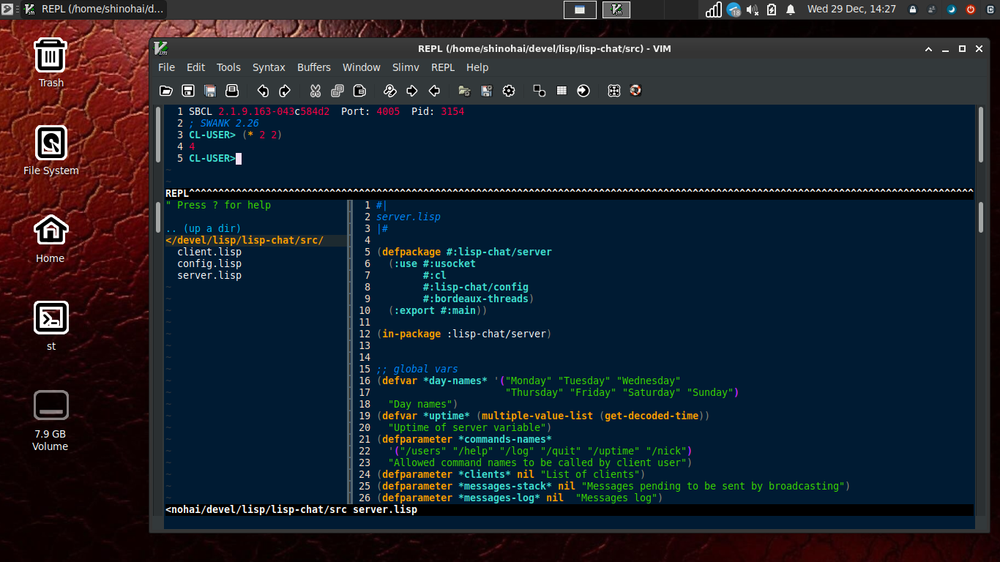
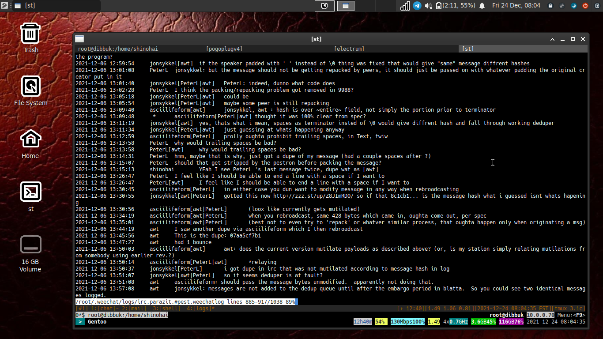

Akris desktop available in pip
Akris Desktop is now available in pip according to this message by the author.
Installation is therefore as easy as:
pip install akris-desktop --user
Tags: News, Linux, Encryption
Nostr keygen in common lisp
It's high time some good, working common lisp tools existed for nostr. As far as I can tell only cl-nosso exists, though it is mostly non-working and far from complete. Here is my attempt at it's grossly inadequate keygen function. This requires the `ironclad` crypto library, available in quicklisp.
(defun make-key-pair ()
"Creates a nostr keypair with 32-byte private and public keys in hex."
(multiple-value-bind (private-key public-key)
(ironclad:generate-key-pair :secp256k1)
(flet ((bytes-to-hex (bytes)
(ironclad:byte-array-to-hex-string bytes)))
(let* ((priv-struct (ironclad:destructure-private-key private-key))
(pub-struct (ironclad:destructure-public-key public-key))
(priv-bytes (getf priv-struct :x))
(pub-point (getf pub-struct :y))
(pub-x (subseq pub-point 1 33))
(priv-hex (bytes-to-hex priv-bytes))
(pub-hex (bytes-to-hex pub-x)))
(list
:/private-key priv-hex
:/public-key pub-hex)))))
(progn
(let ((kp (make-key-pair)))
(format t "Private key: ~A (~D bytes)~%"
(getf kp :/private-key)
(/ (length (getf kp :/private-key)) 2))
(format t "Public key: ~A (~D bytes)~%"
(getf kp :/public-key)
(/ (length (getf kp :/public-key)) 2))
(force-output)))
Come find me on nostr if you want to discuss or wish to complain about how this doesn't work for you. I'll probably just laugh at you for the latter, but come anyway!
Trivial bash shell for common lisp
I recently acquired a fresh laptop, and in the process of setting up sbcl I thought I best polish this little lisp function for my .sbclrc. I shall publish it here lest I forget it, and on the off chance another reader finds it useful.
(defun sh (cmd)
"Run a shell command and return standard output if successful."
(multiple-value-bind (stdout stderr exit)
(uiop:run-program
(format nil "~A" cmd)
:output :string
:error-output :string
:ignore-error-status t)
(if (zerop exit)
stdout
(format nil "Command failed with exit code ~A. Error: ~A" exit stderr))))
Happy holidays to all!
Building awt's akris pestnet client on Gentoo
awt recently released a new station and client library dubbed "akris" for use with the pestnet protocol. Detailed instructions for installing it using various methods are detailed on alethepedia, but here I am documenting how I built on Gentoo in a virtual environment using Python 3.11 and esthlos-v.
I started by creating the python virtual environment in my /devel/ directory, making sure I specified my py interpreter since akris-desktop requires Python >= 3.11. Then we switch to the newly created directory and activate the venv.
python3.11 -m venv pest
cd pest/ && source bin/activate
Now we make a directory for akris and grab the vpatches and seals:
mkdir -p akris && cd $_
mkdir -p patches/ seals/ wot/
wget http://v.alethepedia.com/akris/akris-genesis-99999.vpatch -P patches/
wget http://v.alethepedia.com/akris/akris-genesis-99999.vpatch.thimbronion.sig -P seals/
wget http://wot.deedbot.org/57512CE78CF08BB25FE277A4B16136257FB8FBDD.asc -O wot/thimbrion.asc
After obtaining the needed ingredients, we can now press using V:
v press akris-genesis-99999.vpatch .
When the press completes successfully, we can install the akris station library to our venv using pip:
pip install -e .
Now we can move back to the root 'pest' directory and make a new directory to install the desktop components in:
cd ~/devel/pest
mkdir -p gui && cd $_
mkdir -p patches/ seals/ wot/
Grab the patches and seals much like we did above for the station library:
wget http://v.alethepedia.com/akris_desktop/akris-desktop-genesis-99999.vpatch -P patches/
wget http://v.alethepedia.com/akris_desktop/akris-desktop-genesis-99999.vpatch.thimbronion.sig -P seals/
wget http://wot.deedbot.org/57512CE78CF08BB25FE277A4B16136257FB8FBDD.asc -O wot/thimbrion.asc
Press it, again using `V`:
v press akris-desktop-genesis-99999 .
akris-desktop requires tk, so you might need to install it from portage:
emerge -av dev-python/tk
Once that completes, you will have to manually install icons and imagery for the gui client, since `vdiff` does not handle binary files:
cd akris-desktop/
wget http://v.alethepedia.com/akris_desktop/images.tar.gz
wget http://v.alethepedia.com/akris_desktop/images.tar.gz.thimbronion.sig
Verify the signatures before untarring, because you aren't a heathen:
gpg-1.4.10 --verify images.tar.gz.thimbronion.sig images.tar.gz
gpg: Signature made Tue Jul 25 10:54:59 2023 EDT
gpg: using RSA key 0xB16136257FB8FBDD
gpg: Good signature from "Thimbronion
Now we have verified sigs, decompress and clean up:
tar zxf images.tar.gz
rm -f images.tar.gz images.tar.gz.thimbronion.sig
Then install akris-desktop using pip:
cd ..
pip install -e .
Now we're almost done. Go back to the root pest directory:
cd ~/devel/pest
Create a little start script called "start-gui" for ease of use containing the following:
#!/usr/bin/env bash
python gui/bin/main.py
Now you can easily start your pest station and client from the virtual environment by running `./start-gui`. If all goes well, you'll be greeted with a screen like this:

For more information, visit alethepedia: akris and akris-desktop.
Suckless st regrind
This is just a redo of the original st vpatch with a tweak that allows drawing of images directly to the terminal. Much like the patch listed in the st FAQ this version does not cancel double-buffering, thereby doing away with the flickering that I observed when I first tried this. While not perfect, it does render images well with w3m for me, and by abusing the w3m image display doubles as a simple image viewer with a little bash-foo. Here's how you do that:
#!/bin/bash
if [ -z $1 ]; then
echo
echo "USAGE: timg "
echo
exit 0;
fi
W3MIMGDISPLAY="/usr/local/bin/w3mimgdisplay"
FILENAME=$1
FONTH=14
FONTW=8
COLUMNS=`tput cols`
LINES=`tput lines`
read width height <<< `echo -e "5;$FILENAME" | $W3MIMGDISPLAY`
max_width=$(($FONTW * $COLUMNS))
max_height=$(($FONTH * $(($LINES - 2))))
if test $width -gt $max_width; then
height=$(($height * $max_width / $width))
width=$max_width
fi
if test $height -gt $max_height; then
width=$(($width * $max_height / $height))
height=$max_height
fi
w3m_command="0;1;0;0;$width;$height;;;;;$FILENAME\n4;\n3;"
tput cup $(($height/$FONTH)) 0
echo -e $w3m_command|$W3MIMGDISPLAY
Adventures in pest testnet - Blatta updates and bots
Thimbronion (WoT:thimbronion) published several vpatches for blatta containing some bug fixes and client enhancements. I am currently running version 9978 and so far haven't found any bugs.
Getting an irc bot working on pestnet has caused me a bit of issue up to this point - mainly because I hadn't time to sit down and consider the problem well. Various attempts to get my old reliable busybot connected and responding to commands ended with the output not making it to the channel or user that requested it. I had almost decided making a bot using weechat was the only temporary solution but then PeterL (WoT:PeterL), whilst trying to connect scoopbot, mentioned something about regex which got me thinking about writing one for busybot. So I fired off a netcat listener, captured some input (thanks jonsykkel!), and in the wee hours finally got the bot to behave. I feel confident with a few hours more of cleanup busybot will be back in action full time.
The bot testing was performed using the blatta version above as the station. Once the aforementioned cleanup is done I plan to test the bot using jonsykkel's (WoT:jonsykkel) smalpest also.
Current #pest logs HERE
Adventures in pest testnet - connecting an Android device
A few months ago I published a piece documenting how to set up a gentoo chroot using termux. Since that makes python2.7 available, why not try and connect it to pest testnet?
I promptly set about installing thimbronion: 's blatta by uploading a tarball of it via the phone's sd card. I took the liberty of stripping it down a bit a renaming the main executable "parazit" for this test simply so I could readily distinguish the station on my local network. From within the pest directory I made a startup script with the following contents:
python2.7 parazit \
--log-level debug \
--udp-port=7778 \
--address-table-path=config.py \
--motd=motd
I then run the startup script inside a screen session. Once the station is running in the background I then connect via weechat.

You can also echo text to your weechat fifo like so:
echo 'irc.parazit.#pest *test message from cli' > ~/.weechat/weechat_fifo
At the time of this post the pest station has been running for well over 24 hours with no noticeable affect on the battery or cpu usage. Future experiments may involve sticking this device in a purse and seeing how the station connects outside the local network.
Installing slimv using esthlos-v
Slimv stands for Superior Lisp Interaction Mode for Vim. It is a Vim plugin of 2009 vintage written by Tamas Kovacs, preserved in the form of a vpatch. This is for folx who already have vim,tmux, and sbcl installed and want a quick and reliable method for enabling a swank server in vim ala emacs.
Populate your slimv tree, mine is available at http://btc.info.gf/devel/vim/plugins/slimv/
# tree slimv/
slimv/
├── patches
│ └── slimv.genesis.vpatch
├── seals
│ └── slimv.genesis.vpatch.shinohai.sig
└── wot
└── shinohai.asc
Using esthlos-v press slimv directly to the vim plugins directory:
`v press slimv.genesis.vpatch ~/.vim/pack/plugins/start/`
My sbcl binary is in a nonstandard location (because Gentoo) and I couldn't get the swank server to start from within vim. I remedied this with a function that starts swank in a tmux window using rlwrap:
swank() {
tmux ls | grep '>_' > /dev/null || (
tmux new-session -d -s '>_' -n '[swank]' rlwrap /usr/local/bin/sbcl --load \
~/.vim/pack/plugins/start/slimv/slime/start-swank.lisp
)
exec tmux attach -t '>_'
}
Now when I open a `.lisp` file, vim presents me with a new buffer containing a REPL connected via swank:

BUT WAIT ! THERE'S MOAR !!!
Bundled with slimv is a tool called paredit which will, amongst other things,match parenthesis for you as you code. To learn more about it's features read the documentation by entering `:help paredit`
Source deed for gnupg-1.4.10
This is a mirror of Mircea Popescu's deedbot deed of gnupg-1.4.10. I had someone ask me where this was located recently, and also saw it referenced in the irc logs so figured it might be useful to post it up along with my method of extracting it:
curl -Os4SL http://btc.info.gf/gpg/deeds/deed-378272-1.txt && \
cat deed-378272-1.txt | awk '/future./{flag=1;next}/BEGIN PGP SIGNATURE/{flag=0}flag'|base64 -d >gpg-1.4.10.tar.gz && \
tar zxvf gpg-1.4.10.tar.gz
The sources from this method are what yours truly uses for his static gpg build with musl, but these sources should build in the traditional way for less experienced users.
Tags: News, Cryptography, Linux
Viewing Pest testnet logs using tmux and weechat
This is a simple method of viewing your channel logs in weechat. It can be adapted to also display your znc logs as well. I find this method a much easier way of reviewing channel logs than fiddling with logbot configs, and requires limited resources if one is running pest on a headless machine.
/alias add log /eval /exec -bg tmux new-window -n '[logs]' \ sh -c "less +G $(echo ~/.weechat/logs/${buffer.full_name}.weechatlog | tr '[:upper:]' '[:lower:]')"
Now you can view the weechat logs for any chan by running `/log` in the current buffer. This will open the log in a new tmux window like so, and you can also scroll to your heart's content:

I am also pleased to report that jonsykkel's smalpest in C builds flawlessly, but sadly does not play nicely with blatta instances, so it remains lab use only for now.
Lab notes: Pest and Alcuin part two
Since the last installment there has been updates made to Alcuin, including a rename to Blatta along with a genesis.vpatch for the same, and more recently some bugfixes which I successfully applied and will be testing in the coming week.
So far in testing I have been able to:
- Set up a testnet on localhost.
- Peer with Blatta's creator remotely and pass messages.
- Connect an ircbot using it's own station.1
Interest seems to be brewing in the project, so I hope to grow my WoT for this item and look forward to posting more about this item as work progresses.
Lab notes: Pest and Alcuin part one
Pest is, as defined in the draft spec:
a peer-to-peer network protocol intended for IRC-style chat. It is designed for decentralization of control, resistance to natural and artificial interference, and fits-in-head mechanical simplicity -- in that order.
The fall of TMSR and the subsequent fleanode collapse has evidently provided the catalyst to get the ball rolling on a replacement communications system that doesn't leave the user at the mercy of SJW's or fiat government stooges and other central points of failure. Discussion on the pest spec has been under way in dulapnet irc ever since asciilifeform first published the draft spec in September of this year, and yours truly has just now had time to carve out a bit of time to review the spec, chatlogs, and thimbronion's implementation of the pest spec in Python, known as Alcuin.
Weechat is my preferred irc client, and a few days ago in the logs thimbronion reported that weechat and some other clients would not send custom commands to the server. After looking into this a bit, I discovered weechat will send nonstandard commands to a connected server when prefixed with the `/quote` command. Even further digging into client behavior revealed that this behavior can be modified by simply changing a setting weechat has turned off by default:
/set irc.network.send_unknown_commands on
After setting the above the Alcuin server seemed to process commands exactly as it should, though much work remains to implement the entire spec (as stated in the author's README file). After setting up Python 2.7 on a remote machine and obtaining the script to generate keys from thimbronion, I was able to set up two pest stations and interact between them.
To help make it easier to test and experiment with Alcuin, I have produced a temporary genesis vpatch and sig based on thimbronion's version 9994 tarball and containing the missing key generation script mentioned previously. I will make every effort to keep this updated as the project progresses.
To be continued .....
Suckless st and tabbed
In my quest to vpatch more things that I use regularly, I finally made a section on this site for my collection of suckless tools. While urxvt served me well for some time, it grows more and more into a bloated mess every update for so simple an item as a virtual terminal. st + tabbed combined have far fewer lines of code, is all in C, and with a few tweaks mimics all the good functionalities I need.
The st vpatch is vanilla st with the scrollback patches and externalpipe patch applied so I get a clean genesis starting point, and tabbed is the one found at suckless.org but modified slightly to allow allow renaming of open tabs (more on that below).
Both items are pressed in the usual way using your preferred implementation of V. The `config.h.def` file can be adjusted further to operator preferences before building with `make`.
After the items are installed to your path, a couple of bash functions can be added to one's aliases to ease tabbed terminal startup and renaming of tabs:
function term() {
xid="$(tabbed -c -d -s -r 2 st -w x)"
st -w "$xid" bash &
}
function set-title() {
if [[ -z "$ORIG" ]]; then
ORIG=$PS1
fi
TITLE="\[\e]2;$*\a\]"
PS1=${ORIG}${TITLE}
}
Now I have an easy way to open a tabbed terminal and quickly rename tabs to organize work. For me, it looks something like this:

These items can now be found here:
A simple bip39 diceware script in common lisp
I'm currently bench testing a "Foundation devices" passport hardware Bitcoin wallet, because why not? While the device will happily generate bip39 seeds for you I wanted to test load a bunch of seed phrases generated offline without throwing dice all afternoon and figured a simple lisp script would suffice.
I started with this implementation of diceware. The original author provided no asdf system file or anything, but we don't need that where we're going, so a couple of quick modifications get us where we want to be here. We only need an index of 2048 for our *words* array, so we change that in the script to make it compatible with the standard bip39 wordlist.
(require 'ironclad) (defparameter *words* nil) (defparameter *prng* (ironclad:make-prng :fortuna)) (defun load-words (&optional (wd-list #P "bip39-english.txt")) "Load *words* from bip39-english.txt" (with-open-file (s wd-list) (do ((wd (read-line s nil) (read-line s nil)) ( i 0 (1+ i))) ((not wd)) (setf (aref *words* i) wd)))) (defun choose-one () "Randomly choose a single word from *words*." (aref *words* (ironclad:strong-random (length *words*) *prng*))) (defun choose-password (n) "Generate n random words for a pass phrase. Initialize *words* if needed" (unless *words* (setf *words* (make-array 2048)) (load-words)) (let (words) (dotimes (i n) (push (choose-one) words)) (reverse words)))
Grab the standard bip39 English wordlist from the "Bitcoin Core" Shithub repo, and save it in the same directory as the script naming it "bip39-english.txt".
Load up the script in your lisp REPL (I used SBCL here) and run `choose password` + the number of words you are using for your seed. I'm using 23 words in this example since most hardware wallets will calculate the final word for you.
/usr/local/bin/sbcli --load diceware.lisp REPL for SBCL version 0.1.0 Press CTRL-D or type :q to exit [sbcl]> * (choose-password 23) ("there" "image" "federal" "steak" "renew" "helmet" "attack" "medal" "seat" "game" "return" "way" "shock" "hero" "wolf" "amount" "token" "pluck" "gentle" "evoke" "burst" "siege" "ripple")
The device happily accepted the phrases generated via manual entry, calculated the 24th "checksum" word perfectly, and freed up time for me to continue trying builds of the device firmware. More to come.
Gentoo chroot on android 10 device
I was in a pinch over the weekend and needed a quick gentoo env to test something but only had my stupid android 10 smartphone with me, so wat do? I'm documenting the following recipe that (so far) works for me and preserving the tarball here to my www for possible future needs.
Grab the stage3 for armv7 using curl inside termux.
`curl -sSL4 http://btc.info.gf/devel/gentoo/arm/android/stage3-arm64-20200704.tar.xz`
Gotta fucking fix hardlinks cuz of some android kernel herpderpery so we use proot, also from termux.
`proot --link2symlink tar -C $GENTOO/data -xf stage3-arm64-20200704.tar.xz`
Now make a script that starts up the chroot inside termux and fire it off:
`cat >chroot.sh << EOF #!/usr/bin/env bash set -eu set -o pipefail unset LD_PRELOAD export GENTOO=/data/data/com.termux/gentoo export EPREFIX=/data/gentoo64 proot --link2symlink -r $GENTOO -0 -w / \ -b /dev -b /proc -b /sys \ $EPREFIX/bin/sh -c \ "HOME=$EPREFIX/root $EPREFIX/startprefix" EOF chmod +x chroot.sh sh chroot.sh
Now from inside the chroot, fix your `/etc/resolv.conf` since this can't be copied from android system. Then source your profile and set ENV.
source /etc/profile export PS1="(chroot) $PS1"

Normally this is the step where one sets up portage, but resist the temptation to `emerge-webrsync` here. I'd simply crossdev the packages I needed on a much more capable machine and set up my `/etc/portage/make.conf` to emerge packages from a local binhost.
CAVEATS
This thing will bitch about `proc/` not being mounted on most devices. However, I'm able to see chroot processes inside htop in another termux session.
Because of the extreme minimal size of the environment, user is expected to be capable of building their own env using crossdev as explained above
UPDATE: I forgot to mention that I mounted one of these Kingston 8GB microsd cards before unpacking the fs:

warez addition 'calc' sim
After recovering from my initial shock of finding something useful on "Hacker" "News", I immediately set about cloning this lightweight calculator sim for future hacks.
Now available in my warez section, you can try this handy tool here: [CALC].
That is all.
Tags: News, Math, Python, Linux
Spring projects I: Gentoo distfiles mirror.
One of the more useful items I had not gotten around to mirroring is asciilifeform's historic Gentoo distfiles which is, as far as I can tell, possibly one of the only places on the internet to get these. These will now live here: http://btc.info.gf/devel/gentoo/distfiles/.
The Gentoo section of this www has suffered from a bit of neglect over the past year, and this is something I hope to remedy by this Summer. Possible upgrades will include a collection of guides for various boards, mirrors of historic .iso's (which also are getting harder to locate) and addition of various musl patches I have scattered about from past experiments.
Essential kit items: Building SBCL on Gentoo with musl
Steel Bank Common Lisp is another must-have tool in my kit, since I use it to run my hybrid irc/Telegram bot and many other daily use items. In my previous post I documented how I managed to get gcc-4.9.4 massaged into shape, so this post will serve as a reference on how to do the same for SBCL so in the future I don't have to spend the day researching fixes and locating obscure patchsets.
When building many things using musl, one will often run into "undefined reference to `memcpy@GLIBC_*'" type errors, since glibc uses versioned symbols and musl does not. SBCL is no different, but fortunately a little digging turned up a working patchset on the SBCL mailing list which works beautifully, so I didn't have to spend the better part of a day cobbling one together as I did for gcc. I have preserved a copy of the patchset here and will definitely do my best to maintain these into the future should any major changes occur.
Much like Ada, SBCL requires itself or another ANSI common lisp to build. I decided to use CLISP (version 2.49.92) to perform this task, as it can be quickly built from sources using gcc only (and I didn't want to use a pre-built sbcl binary of unknown provenance). After getting clisp in place, building SBCL is mostly painless using the following steps:
I downloaded the 1.5.7 sources from my site and verified the checksums:
curl -O http://btc.info.gf/devel/gentoo/distfiles/dev-lisp/sbcl/1.5.7/sbcl-1.5.7-source.tar.bz2 curl -O http://btc.info.gf/devel/gentoo/distfiles/dev-lisp/sbcl/1.5.7/Manifest.sha512
Unpack the sources and enter the directory:
tar xjf sbcl-1.5.7-source.tar.bz2 && cd sbcl-1.5.7
Get the musl patchset and apply them:
wget -q -r -nd -N --no-parent -R "index.html*" http://btc.info.gf/devel/gentoo/distfiles/dev-lisp/sbcl/patches/ for i in *.patch; do patch -p1 < $i; done
Build using CLISP and install:
./make.sh "clisp" --fancy ./install.sh
The above recipe has so far worked quite nicely, having been tested by running the above mentioned irc bot and a few other essential lisp programs. I will update this post if/when any bugs are found or if any changes are made.
Building gcc 4.9.4 with musl on Gentoo
Lately I have been experimenting a lot more with musl as a replacement for the continually shitty glibc. While musl was a standard part of cuntoo, it appears that particular project is mostly abandoned by it's author and I want to be more responsible for my own toolkit anyway. So starting with the most recent vanilla musl gentoo stage3, I decided getting my preferred compiler working would be first order of business. I tried the portage route with a simple `emerge -av =sys-devel/gcc-4.9.4-r1` which sang along happily for a while until hitting "configure: error: cannot run C compiled programs." and a few other errors.
After spending some time researching the errors and trying various fixes, I managed to produce a patch that will allow me to manually perform the ebuild steps and get a working gcc for musl. I used the following steps:
Download the sources:
ebuild /var/db/repos/gentoo/sys-devel/gcc/gcc-4.9.4-r1.ebuild fetch
Configure:
ebuild /var/db/repos/gentoo/sys-devel/gcc/gcc-4.9.4-r1.ebuild configure
Go to the source work directory (located at /var/tmp/portage/sys-devel/gcc-4.9.4-r1/work/gcc-4.9.4) and download this patch (sig) and verify, then patch:
patch -p1 < gcc-4.9.4-musl.patch
After patching, complete the manual ebuild steps:
ebuild /var/db/repos/gentoo/sys-devel/gcc/gcc-4.9.4-r1.ebuild compile
ebuild /var/db/repos/gentoo/sys-devel/gcc/gcc-4.9.4-r1.ebuild install
ebuild /var/db/repos/gentoo/sys-devel/gcc/gcc-4.9.4-r1.ebuild merge
Enjoy your shiny new compiler.
(chroot) shinohai ~ # gcc-config -l [1] x86_64-gentoo-linux-musl-4.9.4 * [2] x86_64-gentoo-linux-musl-8.3.0
Next order of business will be trying a fellow named ave1's Ada build for musl and making a POST1 on the results, in addition to publishing the steps I used to get SBCL working in this environment as well.
Zerodium offering increased rewards for UNIX 0day exploits
Zerodium, a company that brokers exploits to governments and "law enforcement" is now offering rewards of up to one half million USD for zero days in UNIX operating systems. The company's website states that payments can be processed in Bitcoin and other "cryptocurrencies".
ZERODIUM evaluates and verifies all submitted research within one week or less. Payments are made in one or multiple installments by wire transfer or using crypto-currencies e.g. Bitcoin.
Zerodium only accepts submissions encrypted with their GPG KEY and claims to take one's privacy "very seriously", though they require a researchers personal information that they promise not to share with anyone, ever.
Tags: News, Bitcoin, Insecurity, Linux
Defeating adblock detectors: popularmechanics.com
While viewing websites in a graphical web browser, occasionally I find a site that hates when one uses adblock plus and prevents viewing unless it is turned off or the user pays for an "ad-free" pass. popularmechanics.com is one such website, and the nag screen remained despite the fact I was also running NoScript. What do?
As it turns out, the solution was baby simple. PopularMechanics uses a 3rd-party site to detect users running adblock, so all I had to do was add the following to /etc/hosts:
127.0.0.1 hearstapps.com
I was then able to smugly continue my research without sharing the page with hundreds of crappy ads, or being forced to pay for a pass on a website that I visit at most twice a year.
Feliz Sabado, mis amigos.